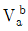
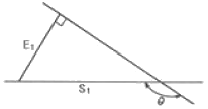
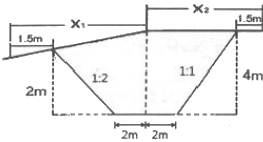
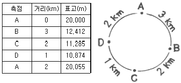
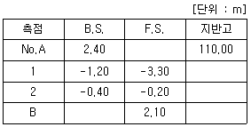
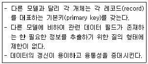
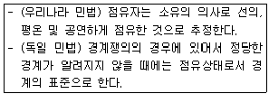

지적기사 (2017-03-05 기출문제)
1과목: 지적측량
1. 최소제곱법에 의한 확률법칙에 의해 처리할 수 있는 오차는?
- 정오차
- 부정오차
- 착각
- 과대오차
(정답률: 85%)

2. 등록전환측량에 대한 설명으로 틀린 것은?
- 토지대장에 등록하는 면적은 등록전환측량의 결과에 따라야 하며, 임야대장의 면적을 그대로 정리할 수 없다.
- 1필지의 일부를 등록전환하려면 등록전환으로 인하여 말소하여야 할 필지의 면적은 반드시 임야분할측량결과도에서 측정하여야 한다.
- 경계점좌표등록부를 비치하는 지역과 연접되어 있는 토지를 등록전환하려면 경계점좌표등록부에 등록하여야 한다.
- 등록전환할 일단의 토지가 2필지 이상으로 분할하여야 할 토지의 경우에는 먼저 지목별로 분할 후 등록전환하여야 한다.
(정답률: 53%)
3. 다음 중 고대 지적 및 측량사와 가장 거리가 먼 것은?
- 테베(Thebes)의 고분벽화
- 고대 수메르(Sumer)지방의 점토판
- 고대 인도 타지마할 유적
- 고대 이집트의 나일 강변
(정답률: 79%)
4. 지적도근점측량의 방법 및 기준에 대한 설명으로 틀린 것은?
- 지적도근점표지의 점간거리는 다각망도선법에 따르는 경우에 평균 0.5km 이상 1km이하로 한다.
- 전파기측량법에 따라 다각망도선법으로 하는 경우 3점 이상의 기지점을 포함한 결합다각방식에 따른다.
- 경위의측량방법에 따라 도선법으로 하는 때에 1도선의 점의 수는 40점 이하로 하며 지형상 부득이한 경우는 50점까지로 할 수 있다.
- 경위의측량방법에 따라 도선법으로 하는 때에 지형상 부득이한 경우를 제외하고는 결합도선에 의한다.
(정답률: 61%)
5. 일람도의 각종 선의 제도방법으로 옳은 것은?
- 수도용지:남색 0.2mm 폭, 2선
- 철도용지:붉은색 0.1mm 폭, 2선
- 취락지ㆍ건물:0.1mm의 선, 내부는 검은색 엷게 채색
- 하천ㆍ구거ㆍ유지:붉은색 0.1mm 폭, 내부는 붉은색 엷게 채색
(정답률: 52%)
6. 경위의측량방법으로 세부측량을 하는 경우 실측거리 65.52m에 대한 실측거리와 경계점 좌표에 의한 계산 거리의 교차 허용 한계는?
- 7.6cm 이내
- 9.6cm 이내
- 12.6cm 이내
- 15.6cm 이내
(정답률: 77%)
7. 지적삼각측량의 계산에서 진수는 몇 자리 이상을 사용하는가?
- 6자리 이상
- 7자리 이상
- 8자리 이상
- 9자리 이상
(정답률: 86%)
8. A, B 두 점의 좌표가 각각 A(200m, 300m,), B(400m, 200m)인 두 가지삼각점을 연결하는 방위각

는?- 26°33‘ 54“
- 153°26‘ 06“
- 206°33‘ 54“
- 333°26‘ 06“
(정답률: 61%)
9. 지적삼각보조점의 망 구성으로 옳은 것은?
- 유심다각망 또는 삽입망
- 삽입망 또는 사각망
- 사각망 또는 교회망
- 교회망 또는 교점다각망
(정답률: 83%)
10. 그림에서 E1=20m, θ=150°일 때 S1은?

- 10.0m
- 23.1m
- 34.6m
- 40.0m
(정답률: 69%)
11. 지적측량에서 망원경을 정ㆍ반위로 수평각을 관측하였을 때 산술평균하여도 소거되지 않는 오차는?
- 편심오차
- 시준축오차
- 수평축오차
- 연직축오차
(정답률: 79%)
12. 표준자보다 2cm 짧게 제작된 50m 줄자로 측정된 340m 거리의 정확한 값은?
- 339.728m
- 339.864m
- 340.136m
- 240.272m
(정답률: 72%)
13. 지적도의 축적이 1/600인 지역의 면적결정방법으로 옳은 것은?
- 산출면적이 123.15m2일 때는 123.2m2로 한다.
- 산출면적이 125.55m2일 때는 126m2로 한다.
- 산출면적이 135.25m2일 때는 135.3m2로 한다.
- 산출면적이 146.55m2일 때는 146.5m2로 한다.
(정답률: 68%)
14. 경위의측량방법으로 세부측량을 하였을 때 측량대상 토지의 경계점 간 실측거리와 경계점의 좌표에 따라 계산한 거리의 교차 기준은? (단, L은 실측거리로서 미터단위로 표시한 수치를 말한다.)
- 3L/10 센티미터 이내
- 3+L/10 센티미터 이내
- 3L/100 센티미터 이내
- 3+L/100 센티미터 이내
(정답률: 81%)
15. 전파기측량방법에 따라 다각망도선법으로 지적삼각보조점측량을 하는 경우 적용되는 기준은로 틀린 것은?
- 3점 이상의 기지점을 포함한 결합다각방식에 따른다.
- 1 도선의 거리는 4킬로미터 이하로 한다.
- 1 도선의 점의 수는 기지점과 교점을 포함하여 5점 이상으로 한다.
- 1 도선이란 기지점과 교점 간 또는 교점과 교점 간을 말한다.
(정답률: 57%)
16. 지적도근점의 번호를 부여하는 방법 기준이 옳은 것은?
- 영구표지를 설치하는 경우에는 시ㆍ군ㆍ구별로 일련번호를 부여한다.
- 영구표지를 설치하는 경우에는 시ㆍ도별로 일련번호를 부여한다.
- 영구표지를 설치하지 아니하는 경우에는 동ㆍ리별로 일련번호를 부여한다.
- 영구표지를 설치하지 아니하는 경우에는 읍ㆍ면별로 일련번호를 부여한다.
(정답률: 78%)
17. 경위의측량방법에 따른 지적삼각점의 관측과 계산에 대한 설명으로 옳은 것은?
- 관측은 20초독 이상의 경위의를 사용한다.
- 삼각형의 각 내각은 30° 이상 150° 이하로 한다.
- 1방향각의 수평각 공차는 30초 이내로 한다.
- 1측회의 폐색 공차는 ±40초 이내로 한다.
(정답률: 73%)
18. 전파기 또는 광파기측량방법에 따른 지적삼각점의 관측과 계산 기준이 틀린 것은?
- 표준편차가 ±(5mm+5ppm) 이상인 정밀측정기를 사용한다.
- 점간거리는 3회 측정하고,원점에 투영된 수평거리로 계산하여야 한다.
- 측정치의 최대치와 최소치의 교차가 평균치의 10만분의 1 이하일 때는 그 평균치를 측정거리로 한다.
- 삼각형의 내각계산은 기지각과의 차가 ±40초 이내이어야 한다.
(정답률: 64%)
19. 다각망도선법에 따른 지적도근점측량에 대한 설명으로 옳은 것은?(오류 신고가 접수된 문제입니다. 반드시 정답과 해설을 확인하시기 바랍니다.)
- 각 도선의 교점은 지적도근점의 번호 앞에 ‘교점’자를 붙인다.
- 3점 이상의 기지점을 포함한 결합다각방식에 따른다.
- 영구표지를 설치하지 않는 경우, 지적도근점의 번호는 시ㆍ군ㆍ구별로 부여한다.
- 1도선의 점의 수는 40개 이하로 한다.
(정답률: 68%)
20. 광파측거기로 두 점 간의 거리를 2회 측정한 결과가 각각 50.55m, 50.58m이었을 때 정확도는?
- 약 1/600
- 약 1/800
- 약 1/1700
- 약 1/3400
(정답률: 45%)
2과목: 응용측량
21. 기복변위에 관한 설명으로 틀린 것은?
- 지표면에 기복이 있을 경우에도 연직으로 촬영하면 축척이 동일하게 나타나는 것이다.
- 지형의 고저변화로 인하여 사진상에 동일지물의 위치변위가 생기는 것이다.
- 기준면 상의 저면 위치와 정점 위치가 중심투영을 거치기 때문에 사진상에 나타나는 위치가 달라지는 것이다.
- 사진면에서 연직점을 중심으로 생기는 방사상의 변위를 말한다.
(정답률: 61%)
22. 비행속도 180km/h인 항공기에서 초점거리 150mm인 카메라로 어느 시가지를 촬영한 항공사진이 있다. 최장 허용 노출시간이 1/250초, 사진의 크기가 23cm×23cm, 사진에서 허용 흔들림양이 0.01mm일 때, 이 사진의 연직점으로부터 6cm 떨어진 위치에 있는 건물에 변위가 0.26cm라면 이 건물의 실제 높이는?
- 60m
- 90m
- 115m
- 130m
(정답률: 42%)
23. GNSS의 스태틱측량을 실시한 결과 거리오차의 크기가 0.10m이고 PDOP이 4일 경우 측위오차의 크기는?
- 0.4m
- 0.6m
- 1.0m
- 1.5m
(정답률: 75%)
24. 도로에 사용되는 곡선 중 수평곡선에 사용되지 않는 것은?
- 단곡선
- 복심곡선
- 방향곡선
- 2차 포물선
(정답률: 61%)
25. GPS 위성신호인 L1과 L2의 주파수의 크기는?
- L1=1274.45MHz, L2=1567.62MHz
- L1=1367.53MHz, L2=1425.30MHz
- L1=1479.23MHz, L2=1321.56MHz
- L1=1575.42MHz, L2=1227.60MHz
(정답률: 66%)
26. 지성선 상의 중요점의 위치와 표고를 측정하여, 이 점들을 기준으로 등고선을 삽입하는 등고선 측정방법은?
- 좌표점법
- 종단점법
- 횡단점법
- 직접법
(정답률: 71%)
27. 완화곡선의 성질에 대해 설명으로 틀린 것은?
- 완화곡선의 반지름은 시작점에서 무한대이다.
- 완화곡선의 반지름은 종점에서 원곡선의 반지름과 같다.
- 완화곡선의 접선은 시점에서 원호에 접한다.
- 완화곡선에 연한 곡선반경의 감소율은 캔트의 증가율과 같다.
(정답률: 70%)
28. 계산과정에서 완전한 검산을 할 수 있어 정밀한 측량에 이용되나, 중간점이 많을 때는 계산이 복잡한 야장기입법은?
- 고차식
- 기고식
- 횡단식
- 승강식
(정답률: 65%)
29. 복심곡선에 대한 설명으로 옳지 않은 것은?
- 반지름이 다른 2개의 단곡선이 그 접속점에서 공통접선을 갖는다.
- 철도 및 도로에서 복심곡선 사용은 승객에게 불쾌감을 줄 수 있다.
- 반지름의 중심은 공통접선과 서로 다른 방향에 있다.
- 산지의 특수한 도로나 산길 등에서 설치하는 경우가 있다.
(정답률: 62%)
30. 지질, 토양, 수자원, 삼림 조사 등의 판독작업에 주로 이용되는 사진은?
- 흑백 사진
- 적외선 사진
- 반사 사진
- 위색 사진
(정답률: 79%)
31. 위성영상의 투영상과 가장 가까운 것은?
- 정사투영상
- 외사투영상
- 중심투영상
- 평사투영상
(정답률: 62%)
32. 그림과 같은 단면에서 도로 용지 폭(X11+X2)은?

- 12.0m
- 15.0m
- 17.2m
- 19.0m
(정답률: 68%)
33. 그림과 같이 A에서부터 관측하여 폐합수준 측량을 한 결과가 표와 같을 때, 오차를 보정한 D점의 표고는?

- 10.819m
- 10.833m
- 10.915m
- 10.929m
(정답률: 55%)
34. 수준측량에 대한 설명으로 옳지 않은 것은?
- 표고는 2점 사이의 높이차를 의미한다.
- 어느 지점의 높이는 기준면으로부터 연직거리로 표시한다.
- 기포관의 감도는 기포 1 눈금에 대한 중심각의 변화를 의미한다.
- 기준면으로부터 정확한 높이를 측정하여 수준측량의 기준이 되는 점으로 정해 놓은 점을 수준 원점이라고 한다.
(정답률: 63%)
35. 지형을 표시하는 일반적인 방법으로 옳지 않은 것은?
- 음영법
- 영선법
- 조감도법
- 등고선법
(정답률: 85%)
36. 촬영고도 2000m에서 초점거리 150mm인 카메라로 평탄한 지역을 촬영한 밀착사진의 크기가 23cm×23cm, 종중복도는 60%, 횡중복도는 30%인 경우 이 연직사진의 유효모델에 찍히는 면적은?
- 2.0km2
- 2.6km2
- 3.0km2
- 3.3km2
(정답률: 57%)
37. 하천, 호수, 항망 등의 수심을 나타내기에 가장 적합한 지형표시 방법은?
- 단채법
- 점고법
- 영선법
- 채석법
(정답률: 80%)
38. 터널 안에서 A점의 좌표가 (1749.0m, 1134.0m, 126.9m), B점의 좌표가 (2419.0m, 987.0m, 149.4m)일 때, A, B점을 연결하는 터널을 굴진하는 경우 이 터널의 경사거리는?
- 685.94m
- 686.19m
- 686.31m
- 686.57m
(정답률: 69%)
39. 터널 내에서의 수준측량 결과가 아래와 같을 때 B점의 지반고는?

- 112.20m
- 114.70m
- 115.70m
- 116.20m
(정답률: 60%)
40. 도로설계 시에 등경사 노선을 결정하려고 한다. 축적 1:5000의 지형도에서 등고선의 간격이 5.0m이고 제한경사를 4%로 하기 위한 지형도상에서의 등고선 간 수평거리는?
- 2.5cm
- 5.0cm
- 100cm
- 125cm
(정답률: 47%)
3과목: 토지정보체계론
41. 현지측량 등으로 얻어진 대상물의 좌표를 직접 입력하여 공간정보를 구축하는 방식은?
- 디지타이징
- 스캐닝
- COGO
- DIGEST
(정답률: 56%)
42. 경로의 최적화, 자원의 분배에 가장 적합한 공간분석 방법은?
- 관망 분석
- 보간 분석
- 분류 분석
- 중첩 분석
(정답률: 67%)
43. Internet GIS에 대한 설명으로 틀린 것은?
- 인터넷 기술을 GIS와 접목시켜 네트워크 환경에서 GIS서비스를 제공할 수 있도록 구축한 시스템이다.
- 조직 내 많은 부서가 공동으로 필요로 하는 다양한 지리정보를 취급할 수 있도록 클라이언트-서버기술을 바탕으로 시스템을 통합시키는 GIS 기술을 말한다.
- 인터넷을 이용한 분석이나 확대, 축소나 기본적인 질의가 가능하다.
- 다른 기종 간에 접속이 가능한 시스템으로 네트워크상에서 움직이기 때문에 각종 시스템에 접속이 가능하다.
(정답률: 54%)
44. 지형공간정보체계가 아닌 것은?
- 지적행적시스템
- 토지정보시스템
- 도시정보시스템
- 환경정보시스템
(정답률: 59%)
45. 지적도면의 수치 파일화 공정순서로 옳은 것은?
- 폴리곤 형성→도면신축보정→지적도면 입력→좌표 및 속성검사
- 폴리곤 형성→지적도면입력→도면신축보정→좌표 및 속성검사
- 지적도면입력→도면신축보정→폴리곤 형성→좌표 및 속성검사
- 지적도면입력→좌표 및 속성검사→도면신축보정→폴리곤 형성
(정답률: 71%)
46. 다음 중 PBLS와 LMIS를 통합한 시스템으로 옳은 것은?
- GSIS
- KLIS
- PLIS
- UIS
(정답률: 84%)
47. 지리현상의 공간적 분석에서 시간 개념을 도입하여, 시간 변화에 따른 공간변화를 이해하기 위한 방법과 가장 밀접한 관련이 있는 것은?
- Temporal GIS
- Embedded SW
- Taget Platform
- Terminating Node
(정답률: 82%)
48. LIS를 구동시키기 위한 가장 중요한 요소로서 전문성과 기술을 요하는 구성 요소는?
- 자료
- 하드웨어
- 소프트웨어
- 조직과 인력
(정답률: 72%)
49. 벡터데이터의 모델과 래스터데이터 모델에서 동시에 표현할 수 있는 것은?
- 점과 선의 형태로 표현
- 지리적위치를 X, Y좌표로 표현
- 그리드 형태로 표현
- 셀의 형태로 표현
(정답률: 71%)
50. 지적적산사료의 이용 및 활용에 관한 사항 중 틀린 것은?
- 필요한 최소한도 안에서 신청하여야 한다.
- 지적파일 자체를 제공하라고 신청할 수는 없다.
- 지적공부의 형식으로는 복사할 수 없다.
- 승인받은 자료의 이용ㆍ활용에 관한 사용료는 무료이다.
(정답률: 79%)
51. 토탈스테이션으로 얻은 자료를 전산처리하는 방법에 대한 설명으로 옳은 것은?
- 디지타이저로 좌표입력을 하여야 한다.
- 스캐너로 자료를 입력한다.
- 특별히 전산화하는 방법이 존재하지 않는다.
- 통신으로 컴퓨터에 전송하여 자료를 처리한다.
(정답률: 65%)
52. 다목적지지의 3대 기본요소에 해당하지 않는 것은?
- 측지기본망
- 필지식별자
- 기본도
- 지적중첩도
(정답률: 79%)
53. 아래와 같은 특징을 갖는 논리적인 데이터베이스 모델은?

- 계층형 모델
- 네트워크형 모델
- 관계형 모델
- 객체지향형 모델
(정답률: 59%)
54. 토지정보를 비롯한 공간정보를 관리하기 위한 데이터 모델로서 현재 가장 보편적으로 많이 쓰이며 데이터의 독립성이 높고 높은 수준의 데이터 조작언어를 사용하는 것은?
- 파일 시스템 모델
- 계층형 데이터 모델
- 관계형 데이터 모델
- 네트워크형 데이터 모델
(정답률: 74%)
55. 다음 위상정보 중 하나의 지점에서 또 다른 지점으로의 이동 시 경로 선정이나 자원의 배분 등과 가장 밀접한 것은?
- 인접성(Neighborhood Or Adjacency)
- 계급성(Hierarchy Or Adjacency)
- 중첩성(Overlay)
- 연결성(Connectivity)
(정답률: 62%)
56. 불규칙삼각망(TIN)에 관한 설명으로 틀린 것은?
- DEM과는 달리 추출된 표본 지점들을 x, y, z값을 갖고 있다.
- 벡터데이터모델로 위상구조를 가지고 있다.
- 표고를 가지고 있는 많은 점들을 연결하면 동일한 크기의 삼각형으로 망이 형성된다.
- 표본점으로부터 삼각형의 네트워크를 생성하는 방법으로 가장 널리 사용되는 방법은 델로니 삼각법이다.
(정답률: 72%)
57. 토지정보체계의 구성 요소로 볼 수 없는 것은?
- 하드웨어
- 정보
- 전문인력
- 스프트웨어
(정답률: 75%)
58. 토지기록전산화의 목적과 거리가 먼 것은?
- 지적공부의 전산화 및 전산파일 유지로 지적서고의 체계적 관리 및 확대
- 체계적이고 효율적인 지적사무와 지적행정의 실현
- 최신 자료에 의한 지적통계와 주민정보의 정확성 제고 및 온라인에 의한 신속성 확보
- 전국적인 등본의 열람을 가능하게 하여 민원인의 편의 증진
(정답률: 53%)
59. 토지 고유번호의 코드 구성 기준이 옳은 것은?
- 행정구역코드 9자리, 대장구분 2자리, 본번 4자리, 부번 4자리, 합계 19자리로 구성
- 행정구역코드 9자리, 대장구분 1자리, 본번 4자리, 부번 5자리, 합계 19자리로 구성
- 행정구역코드 10자리, 대장구분 1자리, 본번 4자리, 부번 4자리, 합계 19자리로 구성
- 행정구역코드 10자리, 대장구분 1자리, 본번 3자리, 부번 5자리, 합계 19자리로 구성
(정답률: 75%)
60. 경위의측량방법으로 지적세부측량을 시행하고자 한다. 이 때 측량준비파일의 작성에 있어 지적기준점 간 거리 및 방위각의 작성 표시색으로 옳은 것은?
- 검은색
- 노란색
- 붉은색
- 파란색
(정답률: 75%)
4과목: 지적학
61. 토지소유권 권리의 특성 중 틀린 것은?
- 항구성
- 탄력성
- 완전성
- 단일성
(정답률: 58%)
62. 현행 지목 중 차문자(次文字)를 따르지 않는 것은?
- 주차장
- 유원지
- 공장용지
- 종교용지
(정답률: 69%)
63. 국가의 재원을 확보하기 위한 지적제도로서 면적본위 지적제도하고도 하는 것은?
- 과세지적
- 법지적
- 다목적지적
- 경제지적
(정답률: 84%)
64. 지번의 결번(缺番)이 발생되는 원인이 아닌 것은?
- 토지조사 당시 지번 누락으로 인한 결번
- 토지의 등록전환으로 인한 결번
- 토지의 경계정정으로 인한 결번
- 토지의 합병으로 인한 결번
(정답률: 55%)
65. 토렌스 시스템의 기본원리에 해당하지 않는 것은?
- 거울이론
- 거래이론
- 커튼이론
- 보험이론
(정답률: 83%)
66. 간주임야도에 대한 설명으로 틀린 것은?
- 고산지대로 조사측량이 곤란하거나 정확도와 관계없는 대단위의 광대한 국유임야 지역을 대상으로 시행하였다.
- 간주임야도에 등록된 소유자는 국가였다.
- 임야도를 작성하지 않고 축척 5만분의 1 또는 2만5천분의 1지형도에 작성되었다.
- 충청북도 청원군, 제천군, 괴산군 속리산 지역을 대상으로 시행되었다.
(정답률: 60%)
67. 다음 경계 중 정밀지적측량이 수행되고 지적관청으로부터 사정의 행정처리가 완료된 것은?
- 보증경계
- 고정경계
- 일반경계
- 특정경계
(정답률: 75%)
68. 1898년 양전사업을 담당하기 위하여 최초로 설치된 기관은?
- 양지아문(量地衙門)
- 지계아문(地契衙門)
- 양지과(量地課)
- 임시토지조사국(臨時土地調査局)
(정답률: 77%)
69. 토지조사사업 당시 확정된, 소유자가 다른 토지 간의 사정된 경계선은?
- 지압선
- 수사선
- 도곽선
- 강계선
(정답률: 85%)
70. 지적의 원리에 대한 설명으로 틀린 것은?
- 공(公)기능성의 원리는 지적공개주의를 말한다.
- 민주성의 원리는 주민참여의 보장을 말한다.
- 능률성의 원리는 중앙집권적 통제를 말한다.
- 정확성의 원리를 지적불부합지의 해소를 말한다.
(정답률: 75%)
71. 새로이 지적공부에 등록하는 사항이나 기존에 등록된 사항의 변경등록은 시장, 군수, 수청장이 관련 법률에서 규정한 절차상의 적법성과 사실관계 부합여부를 심사하여 지적공부에 등록한다는 이념은?
- 형식적 심사주의
- 일물일권주의
- 실질적 심사주의
- 토지표시공개주의
(정답률: 72%)
72. 이기가 해학유서에서 수등이척제에 대한 개선으로 주장한 제도로서, 전지(田地)를 측량할 때 장방형의 눈들을 가진 그물을 사용하여 면적을 산출하는 방법은?
- 일자오결제
- 망척제
- 경부제
- 방전제
(정답률: 79%)
73. 필지는 자연물인 지구를 인간이 필요에 의해 인위적으로 구획한 인공물이다. 필지의 성립요건으로 볼 수 없는 것은?
- 지표면을 인위적으로 구획한 폐쇄된 공간
- 정확한 측량성과
- 지번 및 지목의 설정
- 경계의 결정
(정답률: 58%)
74. 근대적 지적제도가 가장 빨리 시작된 나라는?
- 프랑스
- 독일
- 일본
- 대만
(정답률: 81%)
75. 다음과 관련된 일필지의 경계설정 기준에 관한 설명에 해당하는 것은?

- 경계가 불분명하고 점유형태를 확정할 수 없을 때 분쟁지를 물리적으로 평분하여 쌍방의 토지에 소유시킨다.
- 현재 소유자가 각자 함유하고 있는 지역이 명확한 1개의 선으로 구분되어 있을 때, 이 선을 경계로 한다.
- 새로이 결정하는 경계가 다른 확실한 자료와 비교하여 공평, 합당하지 못할 때에는 상당한 보완을 한다.
- 점유형태를 확인할 수 없을 때 먼저 등록한 소유자에게 소유시킨다.
(정답률: 68%)
76. 토지조사사업에 대한 설명으로 틀린 것은?
- 축척 3천분의 1과 6천분의 1을 사용하여 2만5천분의 1 지형도를 작성할 지형도의 세부측량을 함께 실시하였다.
- 토지조사사업은 사법적인 성격을 갖고 업무를 수행하였으며 연속성과 통일성이 있도록 하였다.
- 토지조사사업의 내용은 토지소유권 조사, 토지가격조사, 지형지모조사가 있다.
- 토지조사사업은 일제가 식민지정책의 일환으로 실시하였다.
(정답률: 69%)
77. 역토(驛土)에 대한 설명으로 틀린 것은?
- 역토는 역참에 부속된 토지의 명칭이다.
- 역토의 수입은 국고수입으로 하였다.
- 역토는 주로 군수비용을 충당하기 위한 토지이다.
- 조선시대 초기에 역토에는 관둔전, 공수전등이 있다.
(정답률: 68%)
78. 토지조사사업 당시 지번의 설정을 생략한 지목은?
- 임야
- 성첩
- 지소
- 잡종지
(정답률: 57%)
79. 대한제국시대에 문란한 토지제도를 바로잡기 위하여 시행한 제도와 관계가 없는 것은?
- 지계(地契)제도
- 입안(立案)제도
- 가계(家契)제도
- 토지증명제도
(정답률: 63%)
80. 토지조사사업 당시 소유자는 같으나 지목이 상이하여 별필(別筆)로 해야 하는 토지들의 경계선과, 소유자를 알 수 없는 토지와의 구획선으로 옳은 것은?
- 강계선(疆界線)
- 경계선(境界線)
- 지역선(地域線)
- 지세선(地稅線)
(정답률: 57%)
5과목: 지적관계법규
81. 지적공부의 ‘대장’으로만 나열된 것은?
- 토지대장, 임야도
- 대지권등록부, 지적도
- 경계점좌표등록부, 일람도
- 공유지연명부, 토지대장
(정답률: 69%)
82. 이미 완료된 등기에 대해 등기 절차상에 착오 또는 유루(流淚)가 발생하여 원시적으로 등기사항과의 불일치가 발생되었을 때 이를 시정하기 위해 행하여지는 등기는?
- 부기등기
- 경정등기
- 회복등기
- 기입등기
(정답률: 74%)
83. 현행 공간정보의 구축 및 관리 등에 관한 법령상 신고사항에 속하는 토지이동은?
- 도시개발사업 등의 완료사실
- 신규등록할 토지가 발생한 경우
- 지목변경에 따른 토지이동
- 토지의 분할 및 합병
(정답률: 48%)
84. 부동산 표시의 변경등기가 아닌 것은?
- 건물 번호의 변경
- 소유권의 변경
- 소재지의 명칭변경
- 토지지번의 변경
(정답률: 59%)
85. 60일 이내에 토지의 이동 신청을 하지 않아도 되는 것은?
- 신규등록 신청
- 지목변경 신청
- 경계정정 신청
- 형질변경에 따른 분할신청
(정답률: 46%)
86. 거짓으로 분할 신청을 한 경우 벌칙 기준으로 옳은 것은?
- 300만원 이하의 과태료
- 1년 이하의 징역 또는 1천만원 이하의 벌금
- 2년 이하의 징역 또는 2천만원 이하의 벌금
- 3년 이하의 징역 또는 3천만원 이하의 벌금
(정답률: 64%)
87. 본등기의 일반적 효력이 적합하지 않은 것은?
- 공신력인정
- 순위확정적효력
- 점유적효력
- 추정적효력
(정답률: 61%)
88. 공간정보의 구축 및 관리 등에 관한 법률에서 규정하고 있는 경계의 의미로 옳은 것은?
- 계곡ㆍ능선 등의 자연적 경계
- 지상에 설치한 담장ㆍ독 등의 인위적인 경계
- 지적도나 임야도에 등록한 경계
- 토지소유자가 표시한 지상경계
(정답률: 81%)
89. 다음 벌칙 중 2년 이하의 징역 또는 2천만원 이하의 벌금에 처하는 행위로 틀린 것은?
- 속임수, 위력, 그 밖의 방법으로 입찰의 공정성을 해친 자
- 측량기준점 표지를 이전 또는 파손하거나 그 효용을 해치는 행위를 한 자
- 고의로 측량성과를 다르게 한 자
- 측량업의 등록을 하지 아니하고 측량업을 한 자
(정답률: 69%)
90. 토지의 이동으로 볼 수 있는 것은?
- 소유자의 주소변경
- 소유자의 변경
- 지상권의 변경
- 경계의 정정
(정답률: 60%)
91. 주거기능 보호나 청소년 보호 등의 목적으로 청소년 유해시설 등 특정시설의 입지를 제한할 필요가 있는 경우에 지정하는 용도지구는?
- 개발진흥지구
- 특정용도제한지구
- 시설보호지구
- 보존지구
(정답률: 68%)
92. 지적전산자료를 이용하거나 활용하려는 자로부터 심사 신청을 받은 관계 중앙행정기관의 장이 심사하여야 할 사항에 해당되지 않는 것은?
- 신청인의 지적전산자료 활용능력
- 신청 내용의 타당성, 적합성 및 공익성
- 개인의 사생활 침해 여부
- 자료의 목적 외 사용 방지 및 안전관리대책
(정답률: 76%)
93. 공간정보의 구축 및 관리 등에 관한 법률에 따른 ‘토지의 이동’에 해당하는 것은?
- 신규등록
- 토지등급변경
- 토지소유자변경
- 수확량등급변경
(정답률: 67%)
94. 측량업의 등록을 하려는 자가 국토교통부장관 또는 시ㆍ도지사에게 제출하여야 할 첨부서류에 해당하지 않는 것은?
- 보유하고 있는 측량기술자의 명단
- 보유하고 있는 측량기술자의 측량기술 경력증명서
- 측량업 사무소의 등기부등본
- 보유하고 있는 장비의 면세서
(정답률: 56%)
95. 지목을 ‘대’로 구분할 수 없는 것은?
- 목장용지 내 주거용 건축물의 부지
- 과수원에 접속된 주거용 건축물의 부지
- 영구적 건축물중 변전소 시설의 부지
- 국토의 계획 및 이용에 관한 법률 등 관계 법령에 따른 택지조성공사가 준공된 토지
(정답률: 74%)
96. 토지대장의 등록사항에 해당하지 않는 것은?
- 면적
- 지번
- 대지권 비율
- 토지의 소재
(정답률: 74%)
97. 미등기토지의 소유권보존등기를 신청할 수 없는 자는?
- 관할 소관청장
- 토지대장상의 소유자
- 확정판결에 의하여 자기의 소유권을 증명하는 자
- 수용으로 인하여 소유권을 취득하였음을 증명하는 자
(정답률: 71%)
98. 동일한 경계가 축척이 다른 도면에 각각 등록되어 있을 때의 경계 결정방법은?
- 소면적에 따른다.
- 소축척에 따른다.
- 대면적에 따른다.
- 대축척에 따른다.
(정답률: 79%)
99. 지적측량수행자가 지적측량을 시행한 후 성과의 정확성에 관한 검사를 받기 위해 사관성에 제출하는 저류로서 틀린 것은?
- 면적측정부
- 지적도
- 측량결과도
- 측량부
(정답률: 53%)
100. 지적기준점표지의 설치ㆍ관리 등에 관한 설명으로 옳은 것은?
- 지적삼각점표지의 점간거리는 평균 4km 이상 10km 이하로 한다.
- 다각망선도법에 따르는 경우를 제외하고 지적도근점표지의 점간거리는 100m 이상 500m 이하로 한다.
- 지적소관청은 연 1회 이상 지적기준점 표지의 이상 유무를 조사하여야 한다.
- 지적기준점표지가 멸실되거나 훼손되었을 때에는 시ㆍ도지사는 이를 다시 설치하거나 보수하여야 한다.
(정답률: 63%)
정오차는 실제 데이터와 직선 사이의 수직 거리를 의미합니다. 하지만 최소제곱법에서는 이러한 수직 거리를 최소화하는 것이 아니라, 수평 거리를 최소화하는 것을 목표로 합니다. 따라서 최소제곱법에 의한 오차는 수평 거리를 기준으로 하기 때문에 부정오차라고 부릅니다.
즉, 최소제곱법에 의한 오차는 실제 데이터와 직선 사이의 수평 거리를 의미하며, 이는 정오차와는 다른 개념입니다.